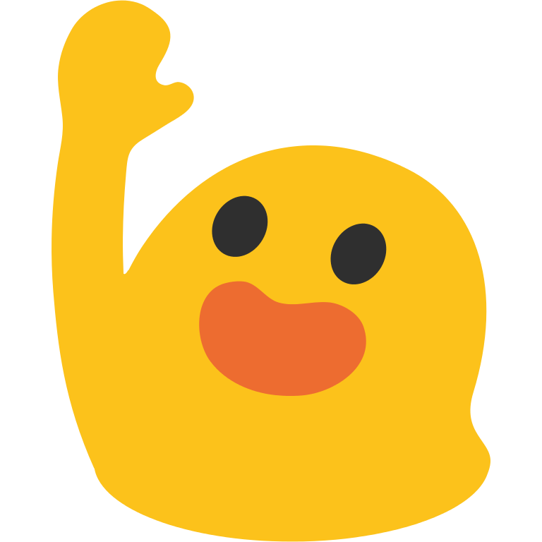

Witaj na stronie o Muuri!
Na niniejszej stronie znajdziesz informacje na temat jednego z ciekawszych pluginów open source - Muuri.
Dowiesz się między innymi o tym, co kryje się pod tytułową nazwą Muuri, co oferuje, jak działa w praktyce, kto go stworzył, jak go użyć na swojej stronie,
jakie funkcje za co są odpowiedzialne. Projekt strony wykonany został na przedmiot Programowanie Aplikacji WWW. Ostatnią aktualizację strony przeprowadzono 03.01.2019r.
Autorem projektu jest Paweł Idzikowski